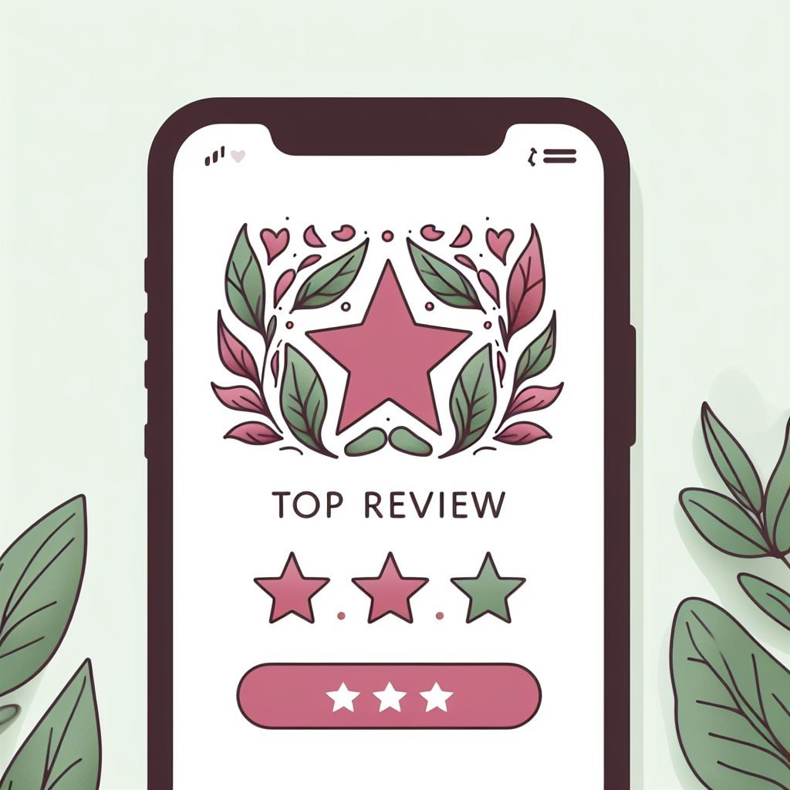

Opinie
Beata - 16.10.2023
Co daje mi praca z Moniką: - mogę zajść głębiej w siebie i zobaczyć gdzie mają źródło moje strachy i leki. Dzięki świadomej pracy i dobremu prowadzeniu mogę przyjrzeć się temu jak doświadczenia z poprzednich wcieleń warunkują moje obecne życie, dlaczego reaguje w danych sytuacjach w określony sposób, mogę dowiedzieć się, dlaczego na swojej drodze spotykam określone osoby. Dzięki tej pracy moge przyjrzęć się sobie co pomaga mi zrozumieć, dlaczego pewne sytuacje wywołują we mnie lek, dlaczego się boje, kiedy tak naprawdę nie mam żadnych podstaw. Dzięki tej pracy odzyskałam głos, jestem bardziej pewna siebie, jestem odważniejsza. Dzięki tej pracy poznaje swoje mocne strony ale i zarazem swoje cienie. Mogę je poznać i zrozumieć i dzięki temu mogę je wykorzystać do rozwoju. - dzięki tej pracy mam możliwość przepracowania i zakończenia karm czy rozwiązania przysiąg, to mnie uwalnia z kajdan niemocy i odzyskuje swoją sprawczość. - widzę że ja się zmieniam, a wraz ze mną moje otoczenie - otrzymuje opiekę i wsparcie przez cały proces dzięki temu czuję się bezpiecznie.
Jola - 23.11.2023
Witam praca z Moniką jest dla mnie bardzo mocna ,uwalnianie swojej przeszłości ,wcieleń ,rodów ,pokazało mi wiele nie zamkniętych spraw ,podczas pracy mogłam wiele zobaczyć ,poczuć jak otwieram serce ,jak sklejam swoją duszę . Dało mi nowe światło,radość ,poczucie pewności ,otwarcie się na miłość i wiem że Monika jest zawsze obok prowadzi pięknie , dziękuję bardzo 😘 🧡